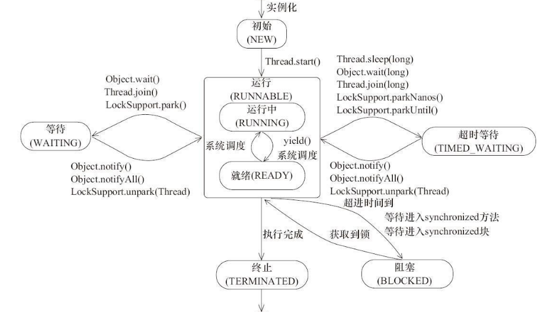

// Thread.State 源码
public enum State {
NEW,
RUNNABLE,
BLOCKED,
WAITING,
TIMED_WAITING,
TERMINATED;
}
一个已经创建而未启动的线程处于改状态，此时还未调用start()方法；
Thread thread = new Thread(() -> {});
System.out.println(thread.getState()); // 输出 NEW
注意：一个线程实例只能被启动一次
该状态可以被看成一个复合状态。它包含两个子状态READY和RUNNING。前者表示处于该状态的线程可以被线程调度器调度而使之处于RUNNING状态。后者表示处于该状态的的线程正在运行，即相应线程对象的run方法所对应的指令正在由处理器执行；执行Thread.yield()的线程，其状态可能会由RUNNING转换为READY。处于READY子状态的线程也被成为活跃线程
一个线程发起一个阻塞式I/O（Blocking I/O）操作后，或者申请一个由其它线程持有的独占资源（比如锁）时，相应的线程会处于该状态；处于BLOCKED状态的线程并不会占用处理器资源；当阻塞式I/O操作完成后，或者线程获得了其申请的资源，该线程的状态可以转换为RUNNABLE；
等待状态；一个线程执行了某些特定方法之后会处于这种等待其他线程执行另外一些特定操作的状态；
调用如下3个方法会使线程进入等待状态：
超时等待状态。该状态和WAITING类似，差别在于处于该状态的线程并非无限制的等待其他线程执行特定操作，而是处于有时间限制的等待状态，当其他线程没有在指定时间内执行该线程所期望的特定操作时，该线程状态会自动转换为RUNNABLE；
调用如下方法会使线程进入超时等待状态：
终止状态。此时线程已执行完毕。

参考资料2- 《Java多线程编程实战指南-核心篇》 《Java多线程编程核心技术》